Ferme bio et camping à la ferme, en Haute-Saône
Dormez dans l'herbe, mangez local, vivez simple.
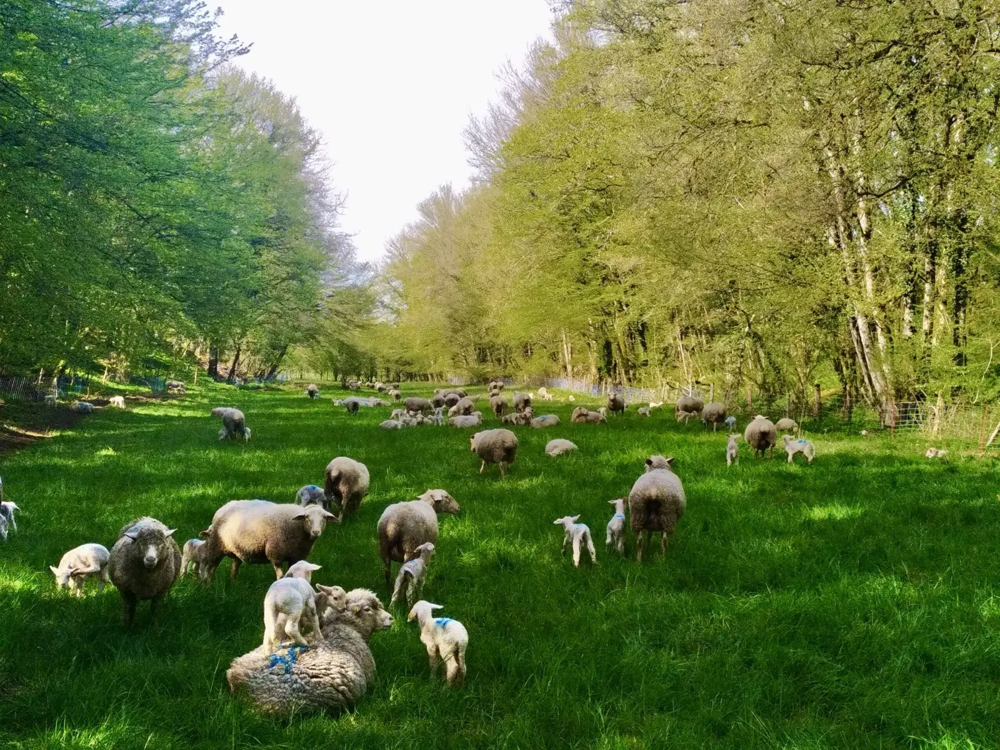
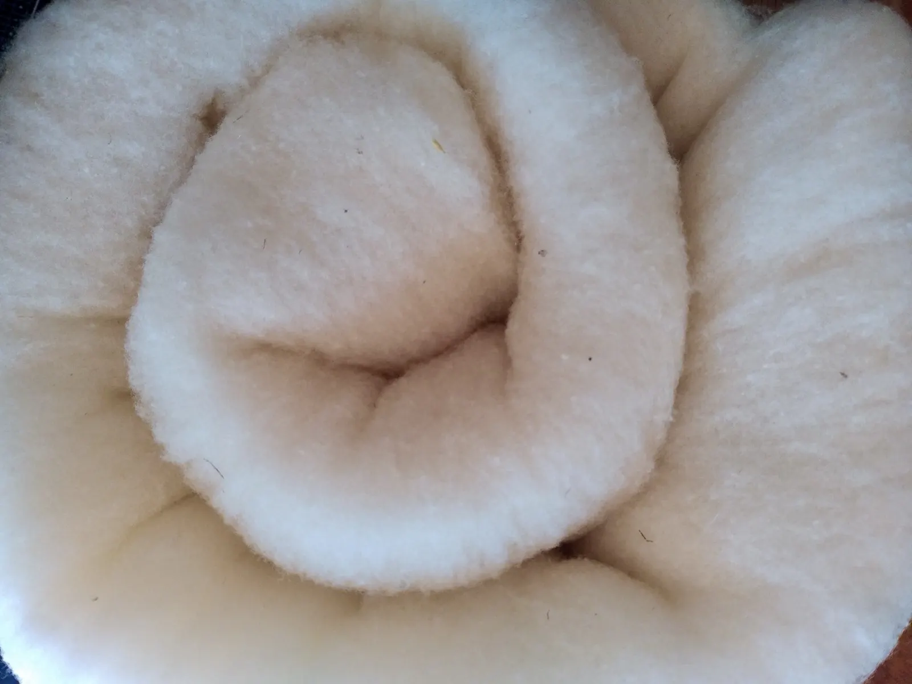
Les 3 Mulets, c'est une ferme biologique où les moutons sont élevés pour leur viande et leur laine, un petit camping paysan et deux associés, Gilles et Nathalie. Nous sommes heureux de vous accueillir pour camper dans un pré, découvrir l'élevage et acheter nos produits.
- 350 brebisen agriculture biologique, surtout de race Blanche du Massif Central
- Toute l'annéede l'agneau, grâce à trois périodes d'agnelage
- Depuis 2024la laine de nos brebis devient couettes, oreillers et chaussons
- Dans un préun camping paysan, sans emplacement figé, bordé par un bois
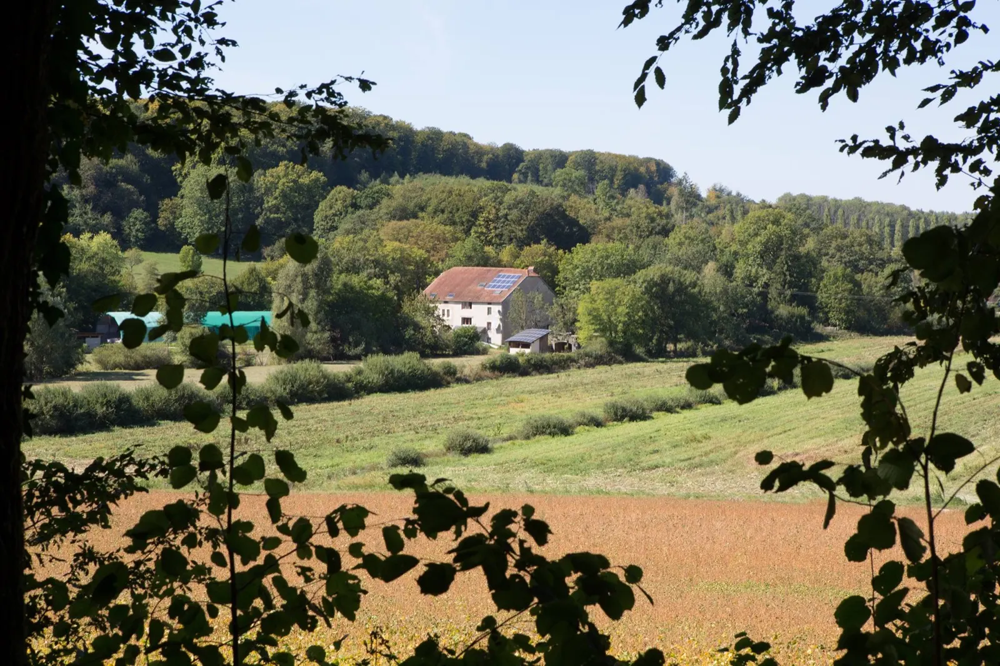
Qui sommes-nous ?
Une ferme accueillante, vivante, respectueuse de la nature.
Une ferme biologique, un petit camping paysan, deux associés plutôt sympathiques, un Moulin avec plein de gens dedans, de 7 à 87 ans, 3 gros chiens qui peuvent faire peur mais qui sont gentils, une armée de chats… Bref, une ferme bien implantée localement et viable économiquement.
Nous sommes heureux de vous accueillir pour :
- camper en toute liberté dans un pré,
- découvrir notre élevage de brebis,
- acheter des produits faits avec leur laine ou leur viande.
La ferme
Une ferme bio et locale, où l'herbe fait l'essentiel.
Toute l'année, nos brebis pâturent nos prés. Nous les rentrons en bergerie à l'approche des agnelages : elles mangent alors du foin de prairie et du foin de légumineuses (trèfle et luzerne) produits sur la ferme.
Nos animaux sont abattus localement, à Luxeuil-les-Bains. Nous découpons nous-mêmes la viande dans notre laboratoire aux normes, à la ferme, et nous en transformons une partie en fricadelles (boulettes à la menthe) et en merguez.
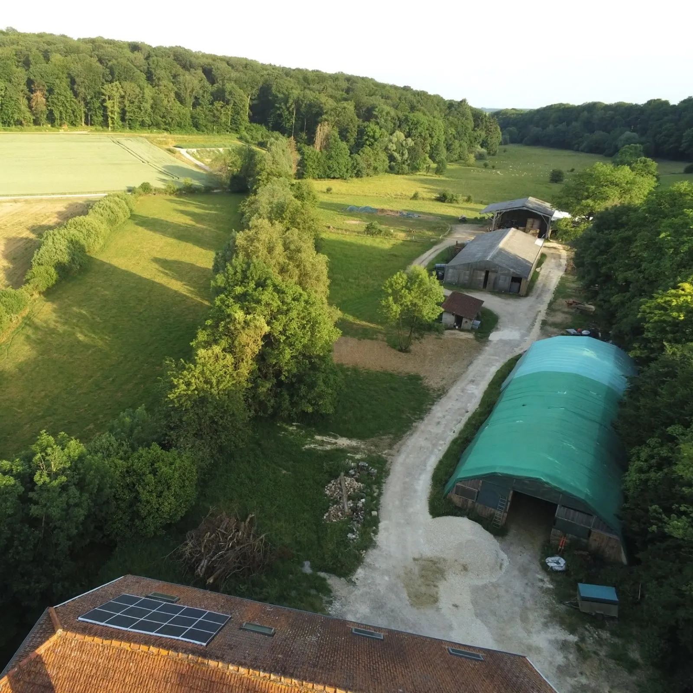
Le troupeau est divisé en trois lots, pour des agnelages étalés dans l'année. De l'agneau toute l'année, même pour Noël et Pâques.
Automne
septembre, octobre
Hiver
décembre, janvier
Printemps
mars, avril
Vente à la ferme et au magasin de producteurs
La viande se commande, puis se retire sur place, sur rendez-vous. La grande majorité de nos produits est vendue aux « Saveurs de la Ferme » à Châtillon-le-Duc, près de Besançon : nous faisons partie des huit fermes associées de ce magasin de producteurs, et nous en sommes très fiers.
Campeurs, la ferme se visite
En autonomie : ne pas nourrir les animaux, ne pas entrer dans les enclos, laisser les compagnons à quatre pattes à l'extérieur de la ferme. Et si nous sommes dans les bâtiments, venez discuter !
La viande d'agneau et de mouton
Sur commande uniquement, tarifs au kilo
- Gigot entier25,00 €
- Gigot désossé27,00 €
- Épaule entière22,50 €
- Côtelettes simples22,00 €
- Merguez de mouton16,50 €
- Fricadelles à la menthe16,50 €
- Saucisson de mouton30,00 €
- Agneau complet ou demi, découpé17,50 €
- Agneau entier pour méchoui16,25 €
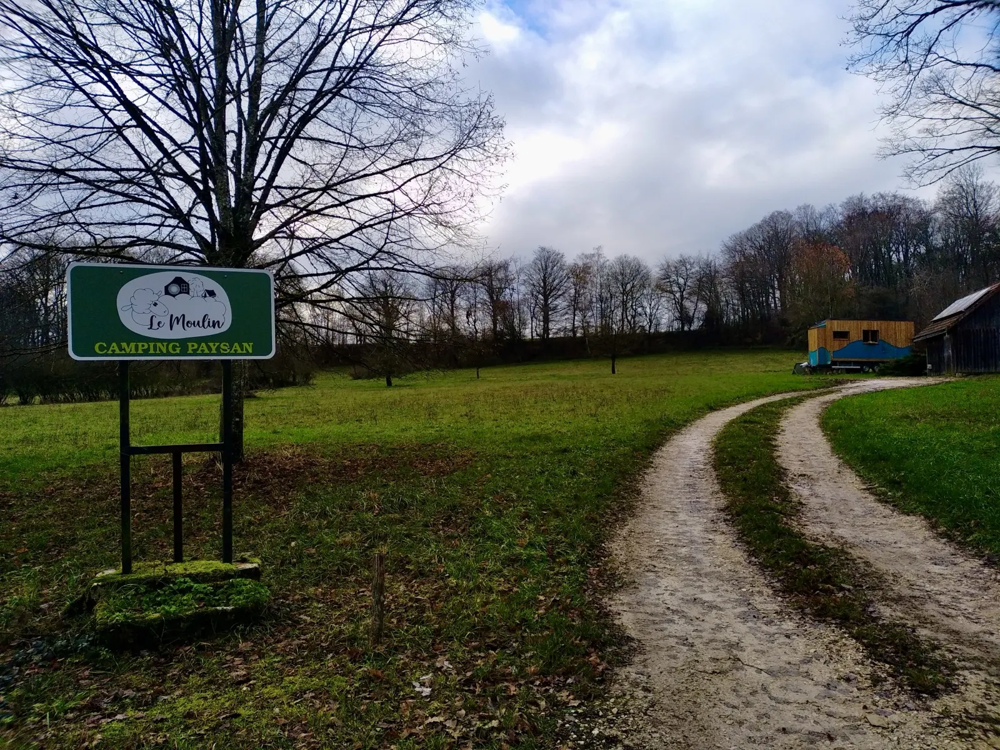
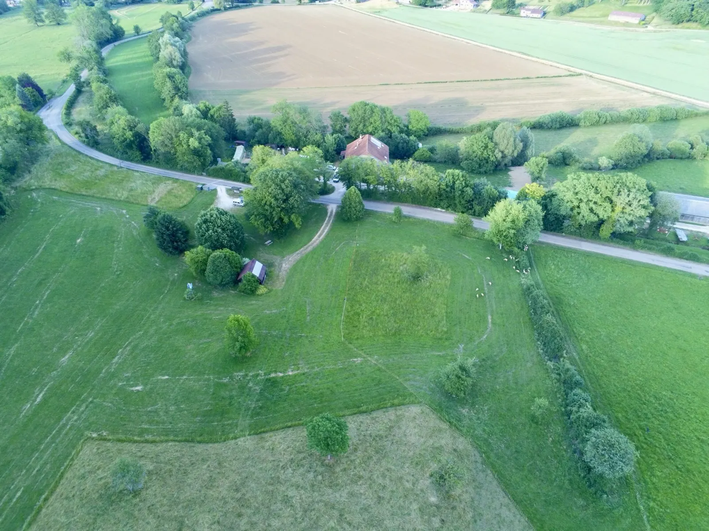
Le camping du Moulin
Dormir dans un pré, au calme.
Ici, pas de parcelles numérotées : vous choisissez votre place dans le pré, à l'ombre d'un arbre ou au soleil. Un petit terrain en pleine campagne, bordé par un bois, loin du tourisme de masse. À vélo, en camping-car ou avec les enfants.
- WC, douches, éviers et lavabos
- Accès à l'électricité
- Réfrigérateur en libre accès
- Barbecue
- Étang de Gourgeon à deux pas
- Animaux bienvenus
Tarifs par nuit
- Adulte et enfant de plus de 12 ans
- 3,30 €
- Enfant de 6 à 12 ans
- 2,50 €
- Enfant de moins de 6 ans
- Gratuit
- Vélo et tente
- 2,50 €
- Voiture et tente
- 3,50 €
- Caravane, camping-car
- 5,00 €
- Électricité (option)
- 3,00 €
Taxe de séjour : 0,20 € par adulte.
Accueil tous les jours entre 8h et 18h ; en dehors, prévenez-nous à l'avance. Réserver n'est pas obligatoire, mais c'est conseillé l'été, par e-mail ou par téléphone.
Les créations en laine
Dormez avec la laine du pré.
Depuis 2024, nous valorisons la laine de nos moutons. Avec l'aide d'artisans français, elle devient des objets utiles, beaux et durables : couettes et oreillers, sacs et cabas isothermes, accessoires de cuisine et de pique-nique.
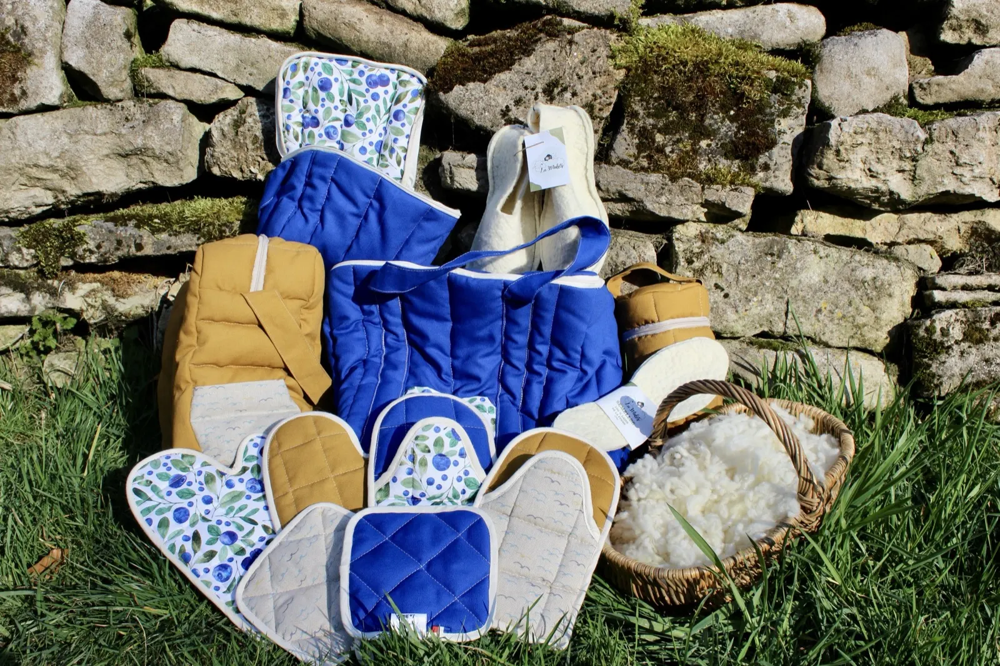
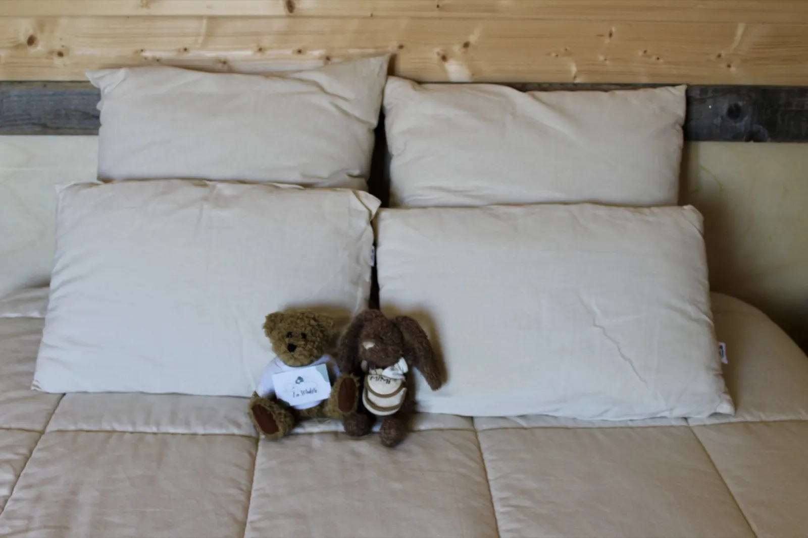
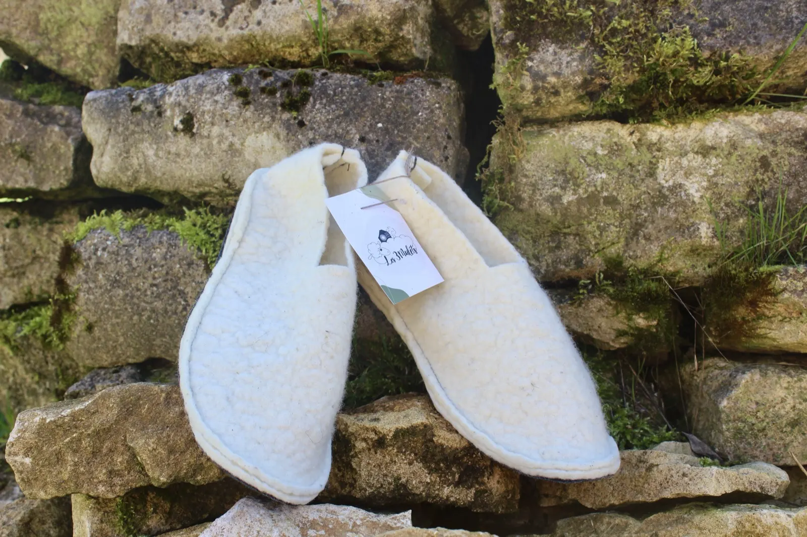
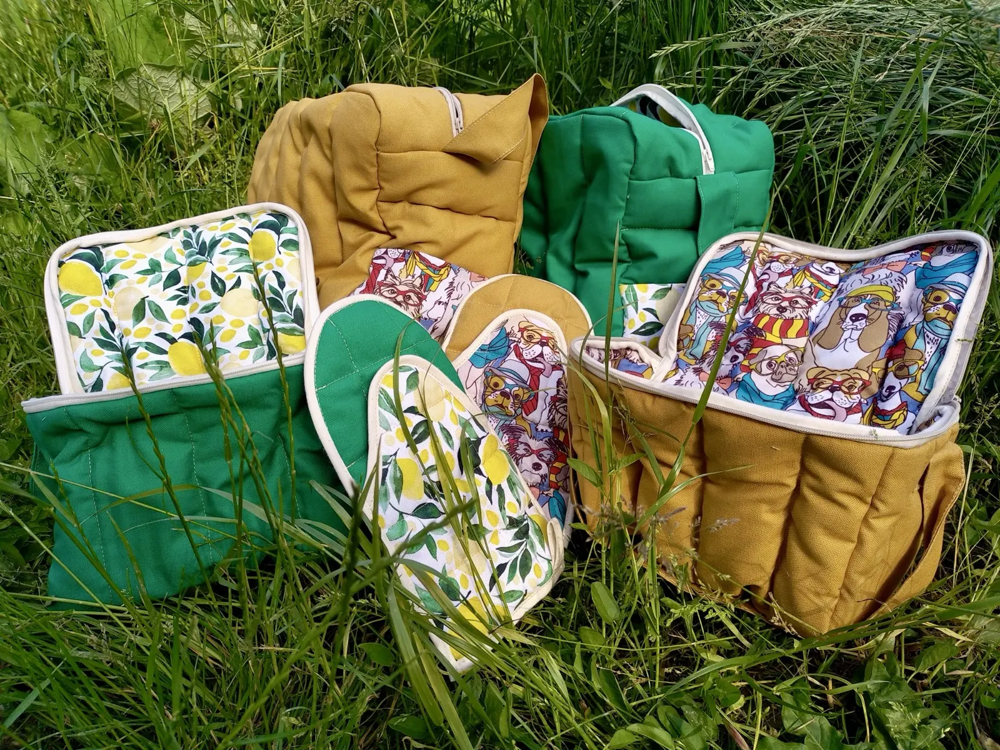
La tonte. Chaque année, nos brebis sont tondues et un premier tri de la laine est fait à la ferme.
Le lavage. La laine part à Saugues (43), où elle est lavée.
La literie. L'entreprise Laurent Laine la transforme en couettes, matelas et oreillers.
Le feutre. Les Ateliers de la Bruyère en feutrent une autre partie pour fabriquer des chaussons et des semelles.
La laine emprisonne près de 80 % d'air dans son propre poids : elle protège du chaud comme du froid.
- Oreiller 40 × 60
- 60 €
- Couette 140 × 200
- 235 €
- Cabas isotherme, petit format
- 70 €
- Manique carrée
- 18 €
Expédition possible en France métropolitaine, frais de port précisés à la commande.
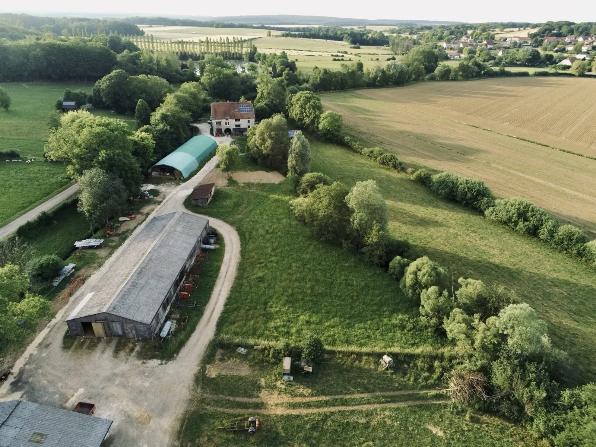
Venir aux 3 Mulets
Au cœur de la Haute-Saône, à Gourgeon.
Depuis la N19 (Langres, Vesoul), entrez dans le village de Gourgeon vers l'église, sortez du village et, à la patte d'oie, prenez à gauche direction Cornot, camping.